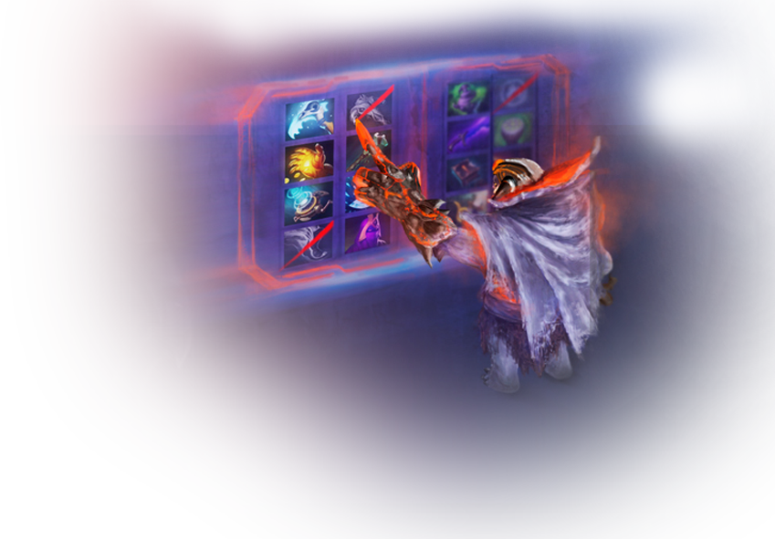
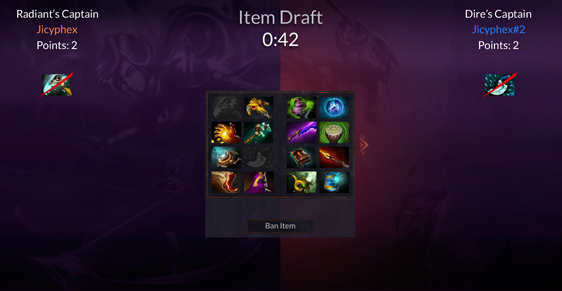
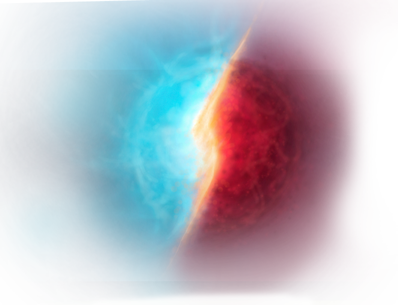
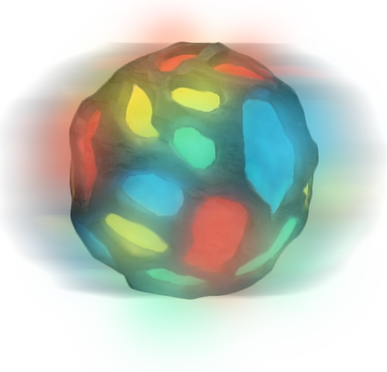
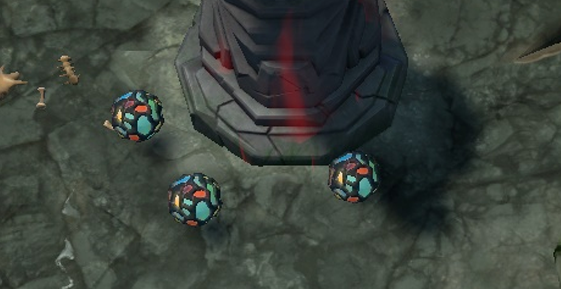
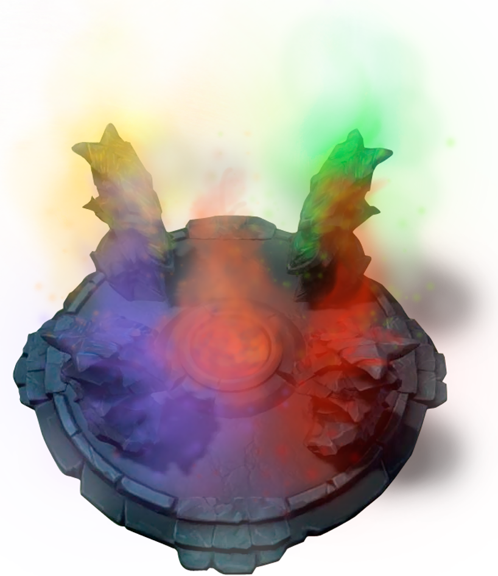

Fight or Flight
Fight or Flight is a fast paced re-interpretation of Dota that redefines the stages of the game; farming is reduced to a minimum, action from the get-go, multiple means of winning and various objectives on the battlefield.
The game features various elements such as CTF and CTP mechanics as well as optional neutral objectives that create a dynamic and complex game.
The game features various elements such as CTF and CTP mechanics as well as optional neutral objectives that create a dynamic and complex game.
Difficulty
Competitive
Duration
Medium
Status
Released
Features
Item Draft

Learn more

The item draft is an additional stage to the Captains Mode where each captain bans an item.
The ban applies to both teams. Both captains have 3 points to spend.
Teams can use the item draft in order to pressure the opponents and put them out of their comfort zone or eliminate a unique strategy.
The ban applies to both teams. Both captains have 3 points to spend.
Teams can use the item draft in order to pressure the opponents and put them out of their comfort zone or eliminate a unique strategy.
Orbs

Learn more
The orb of balance is a major aspect of the game.
Both Orbs will spawn on podiums located in the team’s base.
Teams will try to steal the orb and bring it back to their base in order to score points and get rewards.
Orbs have unique features and interactions and adapt to the situation of the game.
Both Orbs will spawn on podiums located in the team’s base.
Teams will try to steal the orb and bring it back to their base in order to score points and get rewards.
Orbs have unique features and interactions and adapt to the situation of the game.
Outposts
There are 4 outposts on the map, each providing a unique buff to you and your team.
Outposts can be captured by destroying their shields. Once an outpost has been captured, it will provide vision, its unique buff and a passive aura that slows enemies in its area.
Allied outposts can be enhanced with auxiliaries, fortified and teleported to. Outposts will grow stronger each time they’re captured which allows them to scale with the duration of the game.
Outposts can be captured by destroying their shields. Once an outpost has been captured, it will provide vision, its unique buff and a passive aura that slows enemies in its area.
Allied outposts can be enhanced with auxiliaries, fortified and teleported to. Outposts will grow stronger each time they’re captured which allows them to scale with the duration of the game.
Wisdom
Offers experience which scales with the current minute of the match.
Celerity
Grants a movement speed buff which increases every minute.
Fury
Provides the controlling team with an attack speed buff and grows more furious with each passing minute.
Wealth
Enrichens the team with a stable income in gold.
Essence


Essence is an additional resource in Fight or Flight. All captured outposts generate essence which can be cast on the Altar.
Essence will be converted to energy which the team can use in order to summon global spells from the altar.
Essence will be converted to energy which the team can use in order to summon global spells from the altar.
Altar

Learn more
The Altar of Madaskus is the central structure of the map which offers vision to both teams.
Essences can be casted into the fire of the altar, and the team which has the most logs deposited will receive minor bonuses which are present in a greater measure at the four outposts.
Furthermore, the controlling team will gain points after each passing minute.
Essences can be casted into the fire of the altar, and the team which has the most logs deposited will receive minor bonuses which are present in a greater measure at the four outposts.
Furthermore, the controlling team will gain points after each passing minute.
Choose your Game Mode
Custom Balancing
Heroes and items are balanced differently in Fight or Flight than in regular Dota.
You can see the balance changes here
The current balance patch version is 0.51 derived from Dota's 6.84.
You can see the balance changes here
The current balance patch version is 0.51 derived from Dota's 6.84.